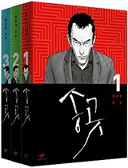
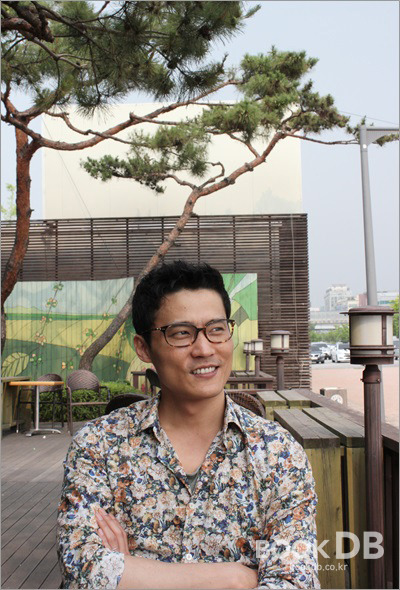

“위안보다 ‘돈’ 주는 만화 그리고 싶었다”
<송곳> 최규석 인터뷰
May 27. 2021
“위안보다 ‘돈’ 주는 만화 그리고 싶었다”
<송곳> 최규석 인터뷰
May 27. 2021
만화가 최규석은 2003년 데뷔 이래 약자들의 이야기를 흥미로운 방식으로 풀어왔다. ‘대중적 성공’과 ‘정치적 올바름’을 동시에 얻을 수 없다는 게 문화계 종사자들이 당면한 슬픈 현실 아니던가? 하지만 그는 보란 듯이 두 마리 토끼를 거뜬히 잡아 온 흔치 않은 능력자다. 지난 해에 그가 네이버에 연재한 <송곳> 이 첫 웹툰 데뷔작으로 화제를 모았다. 특히 대중문화가 거의 금기처럼 밀어낸 노동운동을 정면으로 다루었단 점이 더욱 큰 관심을 끌었다. ‘최규석스러운’ 과감한 도전이었고, 이번에도 의미와 재미 모두에서 ‘최규석만이 가능한’ 성공을 거머쥔다. 그의 독자라면 앞 문장에 형용사로 삽입한 ‘최규석’의 의미를 너끈히 알아채리라.
여기서 <송곳>이 택한 웹툰이 젊은 층에게 가까운 비교적 젊은 매체란 점에 주목할 필요가 있다. 웹툰 <송곳>은 노동운동과 같은 현실적, 정치적 문제들로부터 단절되어 있던 청년세대에게 연결고리 역할을 했던 것이다. 외국계 대형마트 푸르미에서 근무하던 중 부당해고 지시를 받은 후 마침내 송곳처럼 뚫고 나온 노동자 이수인과 거침없는 에너지로 노동계 구석구석 부조리한 지점에 잠입해 정면 돌파를 감행하는 구고신의 캐릭터는 씨실과 날실처럼 한국의 노동현실을 그리고 있다. 또한, 처음 노동운동을 시작하는 이들을 위한 친절한 안내서의 역할을 자청한다.
웹툰의 인기를 몰아 지금까지 연재된 ‘송곳’이 3권의 책으로 묶여 세상 빛을 봤다. <송곳> 발간을 기념해 만화가 최규석을 만나 ‘송곳’ 창작 과정과 한국의 노동현실 그리고 “비판보단 모범”으로 만들어갈 수 있는 희망에 관한 이야기들을 나누어 보았다.


Q 첫 웹툰인데 출판만화 그릴 때와 다른 점이 있었나요?
창작 방식에서 다른 것은 거의 없어요. 마지막 순간에 할 수 있는 게 많아지긴 했죠. 출판만화에선 다 그리고 대사를 마지막으로 결정하면 끝나는데 반해, 웹툰에서는 마지막에 대사나 이야기 순서를 바꾸거나 톤 배치를 자유롭게 할 수 있고요. 웹툰은 마지막까지도 ’대사를 하나 더 넣을 것인가, 말 것인가?’를 고민하게 되죠. 독자 댓글 중에 퇴직금 못 받을 뻔 했다가 제 작품 보고 소송 걸어서 받아냈다고 했을 때 뿌듯하긴 했어요. ’아, 이게 돈이 되는 만화구나’하면서요. 사람들에게 위안을 주는 게 아니라 돈을 주는 만화라는게 기분이 좋죠.
Q <송곳>에서 2003년 까르푸 노조 70일 파업을 모델로 삼은 이유가 있나요?
요샌 노조에 대한 회사의 대응이 진화했어요. 저는 그 단계로 접어들기 전에 노동조합을 만드는 과정을 조금 천천히 보여주고 싶었기 때문에 요즘 회사보단 옛날 회사를 모델로 삼는 게 좋겠다고 생각했어요. 기업에서 비정규직화가 본격적으로 시작되던 시기를 다루어야겠다고 결심했죠. 또 그 때는 진보정권이 집권하던 시기였기 때문에, 노동문제가 단순히 정권의 문제만은 아님도 보여주고 싶었고요.
Q <송곳>의 구고신과 이수인 두 상반되는 캐릭터를 만들기 위해 어떤 취재를 하셨나요?
구고신 캐릭터를 만들기 위해 하종강 선생님 인터뷰를 길게 했고 그 외에는 오랜 기간 일반노조 활동 해온 분들을 위주로 만났어요. 사실 구고신은 제가 이해하기 힘든 캐릭터였어요. 여러 명을 만나면서 신념이 얼마나 강하면 그렇게 오래 버틸 수 있는 것인지를 집중적으로 고민했죠. 게다가 나보다 똑똑한 인간이잖아요. 이수인은 지금의 나보다는 노동문제에 대한 지식이 떨어지지만 내가 발전해온 단계를 따라가겠죠. 구고신 머리 속에 뭐가 들어가 있는지 나는 모르지만 이수인 머리 속에 뭐가 들어있는지는 알죠.
Q <미생>의 장그래가 공감과 위로의 아이콘이라면 <송곳>의 이수인은 거기서 한 발자국 나아가 적극적으로 현실에 맞서라고 말하는 캐릭터로 다가왔습니다.
뭐, 자기 인생 자기가 사는 건데요.(웃음) 그런 사람이 발생했을 때 방해나 하지 말자는 마음으로 살면 돼요. 맞서는 사람이 있으면 훌륭하고 존경스러운 사람인 거죠. 그렇지만 누구에게 나서라고 강요할 수 없는 것 아닙니까? 자기가 나설 수 없다고 해서 부끄러워할 일은 아니라고 생각해요.
Q 구고신이라는 이름이 독특한 울림을 주는데 캐릭터와 연결되는 면이 있나요?
고문 경험자를 ‘고신’이라고 하잖아요. 구고신 같은 사람들은 자기가 힘든 상태에 있을 때에만 양심에 거리낌이 없는 그런 인간들이죠. 김진숙 지도위원(2011년 1월 6일 한진중공업 정리해고 철회를 외치며 35m 높이 크레인에 올라 309일 동안 고공농성을 벌였다-기자 주)도 누가 감옥에 가있거나 철탑에 올라가 있으면 방에 불을 안 때는 그런 스타일이잖아요. 세상의 모든 고통을 내가 겪어야 하는. 구고신도 스스로를 계속 괴로운 상태에 담아 놓는 그런 인간이라고 생각이 들어요.
Q 취재 내용과 구상이 <송곳>에 어느 비율로 반영이 되었나요?
전체 이야기 흐름은 김경욱 위원장 인터뷰를 전적으로 따르고 있어요. 물론 재밌는 호흡을 주기 위해 순서도 바꾸고 있는 걸 빼고 없는 이야기를 집어넣기도 해요. 하지만 전체 틀은 김 위원장 진술을 벗어나지 않죠. 실화를 고집해서라기보다는, 내가 잘 모르는 영역이다 보니 어디까지 가능한지 잘 모르기 때문이에요. 그래서 실제로 가능했다면 이 안에서는 왔다 갔다 해도 크게 벗어나지 않을 것이라고 안심하기 위해 울타리를 쳐놓는 거죠. 굳이 내가 새로 만들 이유도 없고요. 책을 많이 봤어요.
Q 어떤 책들을 보셨나요?
구고신을 이해하기 위해서 본 책이
<급진주의자를 위한 규칙>
이었어요. 미국 빈민운동의 대부와 같은 존재인 사울 알린스키가 지었죠.
사울 알린스키는 굉장히 실용주의적인, 합법의 틀을 깨지 않는 방식으로 활동을 한 인물이에요. 그 중에서도 조금 원칙이 없는 것 아닌가 싶은 정도의 행동은 서슴없이 하는 신선한 방식으로 활동을 했죠. 굉장히 매력적인 인물이라고 생각해요. 한국 초기 학생운동에도 영향을 많이 미쳤고요. 도시 산업선교회도 조직 활동가 교육프로그램 같은 것을 많이 한 그 분 영향을 많이 받았어요. 온갖 활동가들을 다 키워냈죠. 그만의 어떤 사상이 완전히 확립되진 않았지만. 활동 하면서 당위에 매몰되지 않았어요. 그러니까 나이들 때까지 활동을 한 거죠.
박상훈 선생이 쓴 <정치의 발견> 에도 사울 인용이 많이 되고 있어요. 두 분이 겹치는 부분이 많아요.
Q “분명 하나쯤은 뚫고 나온다. 제 스스로도 자신을 어쩌지 못해서 기어이 한걸음 내딛고 마는 그런 송곳 같은 인간이."라는 구고신의 대사가 작품의 주제와 제목 ‘송곳’을 선명하게 그리고 있는데요.
노조 활동가들을 인터뷰하면서 제가 느낀 이미지는 이들이 주도적으로 뚫고 나오는 게 아니라 조직이 틀어지는데 상황에서도 그대로 굽혀지지 않는 사람들이었어요. 어쩔 수 없이 뚫고 나오는 거지, 이들이 일부러 뚫고 나오는 건 아니에요. 설립 초기의 노조는 시작 단계라 (활동가들이) 손해를 볼 가능성이 굉장히 크기 때문에 운영이 힘들어요. 그럼 어떤 사람이 초기 노조의 리더가 될까요? 보통 조직을 사랑하는 사람들, 일을 아주 열심히 하던 사람들, 책임감이 강하고, 동료들을 사랑하던 사람들이 리더가 돼요. 회사는 혁신을 해야 한다고 하는데, 혁신의 요소에 대한 의견이 서로 갈리는 거죠. 자신은 조직을 지키려고 희생을 하면서 열심히 살아왔는데 회사는 직원을 해고하거나 더 힘들게 돌리는 식으로, 자신만큼의 노력을 안 하는 게 보이잖아요. 사람을 쳐내지 않으면서도 원하는 방식대로 갈 수 있다고 주장하지만 그게 안 되는 거죠. 화가 나니까 그 자리에서 버티게 되고요.
Q <송곳>은 여타 만화들과 다른 개인의 선악이 아닌 구조적 선악의 구도를 취하는데요. 그렇다면 선생님이 지향하는 윤리를 설명해 주신다면요?
‘타인은 우연히 내가 아닌 사람’이라는 게 제 밑바닥에 깔려있어요. 세상 어떤 ‘악인’도 그 사람은 우연히 내가 아닌 사람이고, 내가 그 사람이 될 수도 있었던 거죠. 보통 적대하게 되면 상대를 소중하게 간주하지 않죠. 하지만 인간은 누구나 괜찮은 사람이 될 가능성을 가진 소중한 존재라고 생각해요. 사실 어떤 인간이 어떤 인간이 되는 데는 자기가 원해서 되는 부분도 있지만 거의 대부분은 그냥 자연스럽게 살다 보니 우연히 그런 인간이 될 수밖에 없는 경로로 들어서는 경우가 많아요. 그렇다면 그 사람이 저지르고 있는 죄를 그에게서 분리하는 시선이 필요하다고 생각해요. 마지막 순간까지 어쨌든 그 인간이 중요하다는 거죠. 그 인간은 내가 저기에 있을 때. 내가 합당하게 논리적으로 받아들일 수 있는 데까지의 대우가 필요하다는 거죠.
Q 지속적으로 약자들을, 약자를 위해 싸우는 사람들을 매력적인 이야기 안에 담아오셨는데요.
사회운동에 처음 관심을 기울인 사람들이 가장 먼저 갖는 불만이 “왜 이렇게 구린가?” 하는 거예요. 저 또한 구린 부분이 상당히 많다고 생각해요.(웃음) 처음 사회운동을 접한 분들에게 그 문화가 낯설어 일수도 있고, 운동 당사자들이 스타일을 바꿀 만큼 여력이 없어서일 수도 있어요. ‘왜 집회를 이런 방식으로밖에 못하느냐’고들 하는데, 이건 그 활동을 계속 해온 사람들에게 끊임없이 제기되어온 문제란 말이죠. 그들을 지지하는 입장에 있다고 한다면 비판 보다는 도움을 줄 수 있어야겠죠. 만일 노동운동 집회 형식이 너무 구리다고 느낀다면, 직접 안에 들어가서 더 좋은 집회를 만들어 내거나, 역발상으로 그 자체를 멋있어 보이게 만들면 돼요. 기존하는 ‘멋있는 집회’를 그리는 게 아니라, 기존 형식을 건드리지 않으면서도 폼나 보이게 그리는 거예요. ‘안 멋있어 보여? 그럼 콘트라스트 좀 바꿔서 멋있어 보이게 그려보지’ 뭐 이런 거죠. 그런 시도를 해보고 싶었어요. 원래 그런 단순 무식한 방식을 좋아해요.(웃음)
Q ‘멋있지 않다면 멋있게 그리겠다!’ 사람들의 ‘의식’이 변화하는데 있어서 중요한 문제 같아요.
언제나 ‘비판보다 모범’이 제가 지향하는 태도예요. 저는 어쨌든 만화라는 매체를 가지고 있는 사람이잖아요. 만화를 통해 모범을 보이면 되죠. 비판을 하면 아주 좋은 비판이 아닌 경우에는 아무 의미가 없어요. 일하는 사람들을 지치게 만들 뿐이죠. 누가 몰라서 안 하겠습니까? 자기들도 하면서 ‘아 이거 구린데’라고 생각한단 말이죠. 하지만 어떻게 하면 안 구리게 하는지 몰라요. 괜히 어설프게 신선한 걸 시도했다가 더 욕만 먹기도 하고요.(웃음) 일반노조도 그렇잖아요. 작품 소재로 일반노조를 다루는 것의 중요성에 대해 누가 몰랐겠습니까? 얘기를 꺼내도 ‘그게 될까?’ 했던 거죠. 하지만 누가 나서서 성공하면 그때부턴 쫙 깔릴 수 있어요 ‘나나 잘하자’, ‘내 탓이오’ 주의예요. 천주교라서.(웃음)
Q 한국 노동현실은 무척 열악합니다. 이 주제로 작품 제작을 위해 오랜 기간 고민도 하고 조사도 하셨을 텐데 제시하고픈 나름의 해답이 있다면요?
사실 대단한 해답은 없습니다. 결국 모든 사회운동은 준비된 역량이 있어야 하고. 좋은 비전을 계속 만들고 제시하다 보면 어느 순간 기회는 오게 되어 있어요. 준비되어 있지 않으면 기회가 와도 한 번의 싸움으로 끝나지만 준비되어 있으면 기회가 오면 걸리죠. 물론 그 과정에서 당면한 문제로 싸우는 사람들은 깨져 나갈 거예요. 그럴 땐 (주변에서) 열심히 도와야 하고요. 힘 빠지더라도 포기할 수 없고, 할 수 있는 게 있다면 해야 해요. 그렇게 저변이 확장되는 게 중요하다고 봐요. 노동문제를 부정적으로 보던 사람들도 좀 더 디테일을 보여주면 해결해야 할 문제라고 느끼는 사람들이 있을 것이고. 그렇게 관심 기울이는 사람이 많아질수록 노동운동 문제의 중심에 있는 사람들도 자기반성을 하게 되죠.
Q 2011년 출간된 <지금은 없는 이야기> 서문에서 ‘세상은 이야기가 지배한다’고 하셨는데요.
생각할 시간이 많지 않은, 생각을 의무적으로 하지 않는 대다수의 사람들의 사고를 무엇이 만드는가를 보면 ‘이야기’예요. 이야기 요소를 가진 지식일 경우에만 머릿속으로 들어와서 사람의 사고를 형성하게 돼요. 예컨대 사람들이 ‘약자를 보호해야 한다’는 인식을 갖지 않는다면, 이것을 주장하는 사람들이 일반의 사람들 머릿속에 박힐 수 있는 이야기를 만들어 내지 못한 거에요. 하지만 그 반대 이야기는 매우 쉽게 꽂혀요. 예를 들면 ‘경쟁 이데올로기’가 그렇죠. 어릴 때부터 우리는 경쟁을 하고, 경쟁의 필요성은 모두가 느끼거든요. 그런데 진보진영에서는 경쟁 자체에 딴지를 걸고 경쟁을 없애야 한다는 식으로 가요. ‘어떤 경쟁’은 해도 되고, ‘어떤 경쟁’은 하면 안 되는 지에 초점을 맞추고 얘길 해야 하는 건데도요. 과거엔 ‘불쌍한 사람을 도와야 한다’는 전통 이데올로기가 사회에 깔려 있어서 진보 진영에서 약자들을 불쌍하단 논리로 몰고 가면 헤게모니를 쥘 수 있어요. 그때 진보 진영의 언어가 먹힌 거라고 생각하지만, 사실은 보수 성향, 전통 사회 윤리의식이 자극된 거예요. 그런데 그 헤게모니가 이제는 없어진 거죠. 발화방식을 한번 뒤집어야 할 때가 왔어요.
- 북DB 2015.6.22 게재
http://news.bookdb.co.kr/bdb/Interview.do?_method=InterviewDetail&sc.mreviewNo=60592